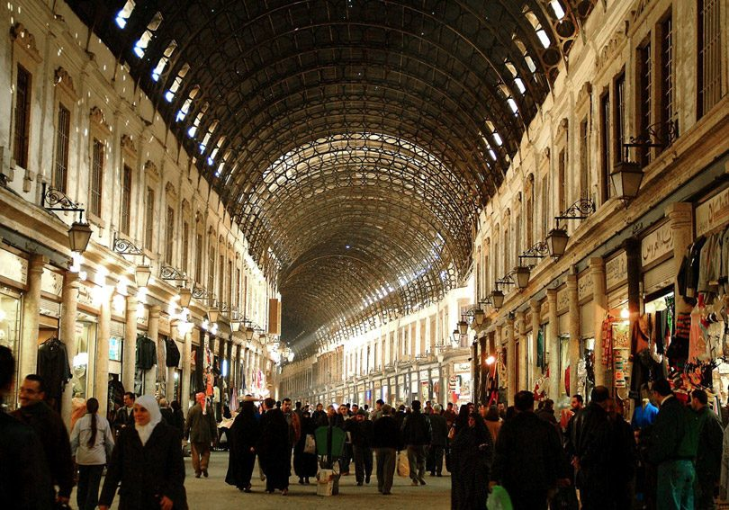

Hamidiye Çarşısı, kale içindeki eski Şam'ın içinde bulunan Suriye'nin en büyük ve merkezi çarşısıdır.
1780'de Sultan I. Abdulhamid tarafından yaptırılmış, Sultan II. Abdulhamid tarafından da genişletilmiştir.
Çarşı, yaklaşık 600 metre uzunluğunda, 15 metre genişliğinde, ve 10 metre uzunluğunda bir metal kemerle kaplıdır.
Suk El-Sawra caddesinde başlayıp Emevî Camii plazasında sona erer ve Antik Roma Jüpiter Tapınağı girişinde 40 metre boyundadır.
